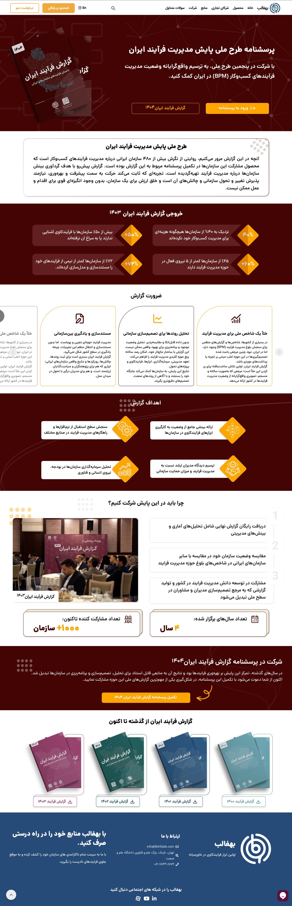
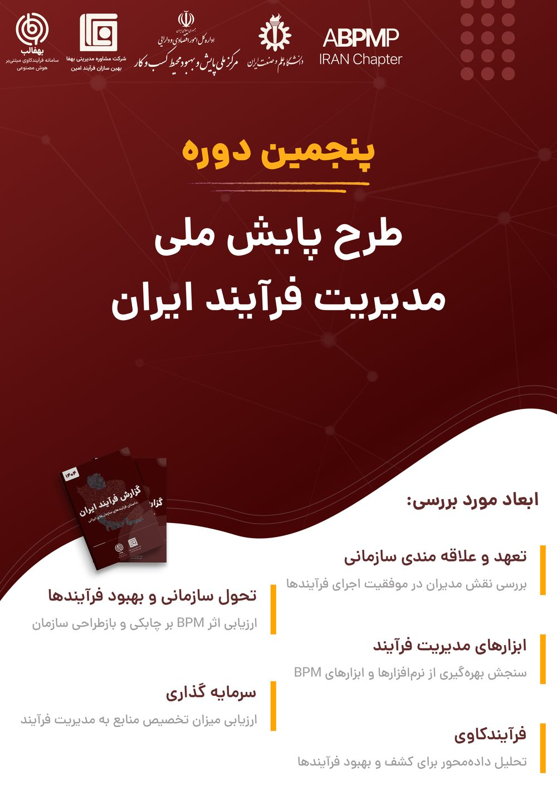
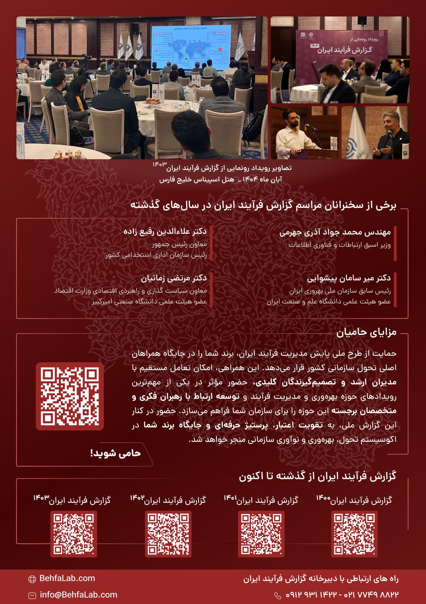
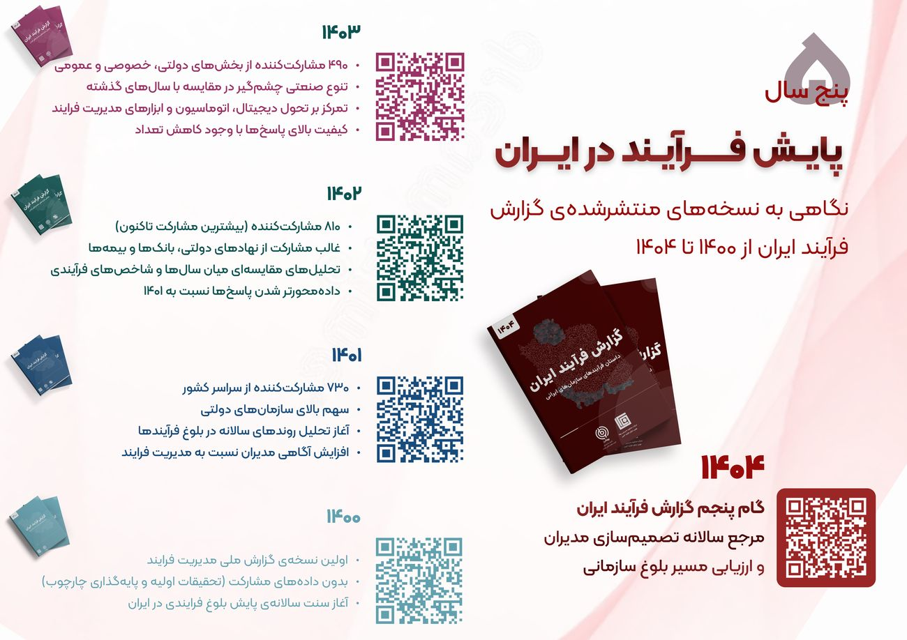
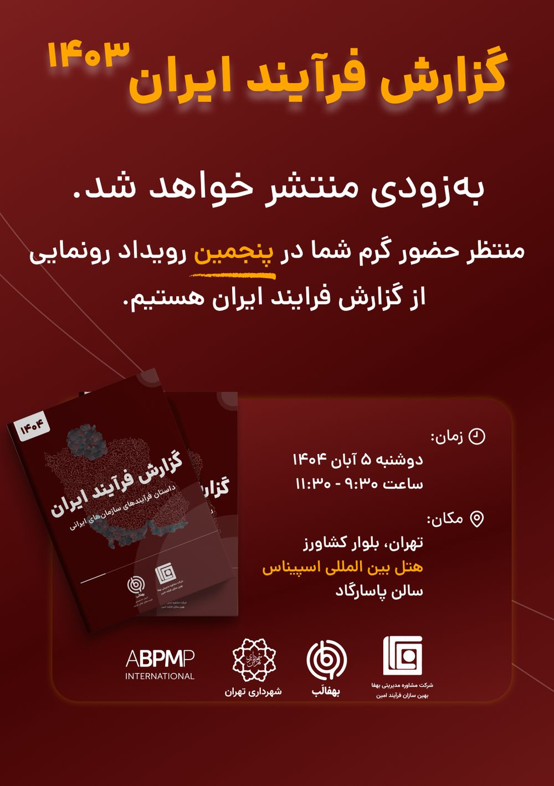

Behfalab
UI/UX design across Behfalab's core process-mining platform and a dedicated analytics dashboard for a national B2B client — plus the full brand system for "Iran Process Report" — Behfalab's flagship process-management publication, its campaign website, and its print and event collateral.
↗ Visit Live Site
Behfalab's core platform reconstructs how a company's processes actually run from raw event-log data, checks that behavior against the process the company designed on paper — conformance checking — and predicts where a running case is likely headed next. My scope covers three connected surfaces: a dedicated analytics dashboard built for one of Behfalab's national B2B clients (KPI cards, comparative bar charts, and province-level rankings over that client's event-log data), the conformance-checking and prediction views inside the core platform, and, outside the software entirely, creative direction for Iran Process Report — Behfalab's process-management publication and event.
The client-facing dashboard and the core platform's conformance and prediction views share one visual language, while Iran Process Report stands apart as a dedicated brand system — the report booklet itself, a three-page responsive campaign site for the 1404 edition, and the print and event collateral around it, all built to carry Behfalab's process-mining narrative to people who never open the product. Click any frame to view it full size.




